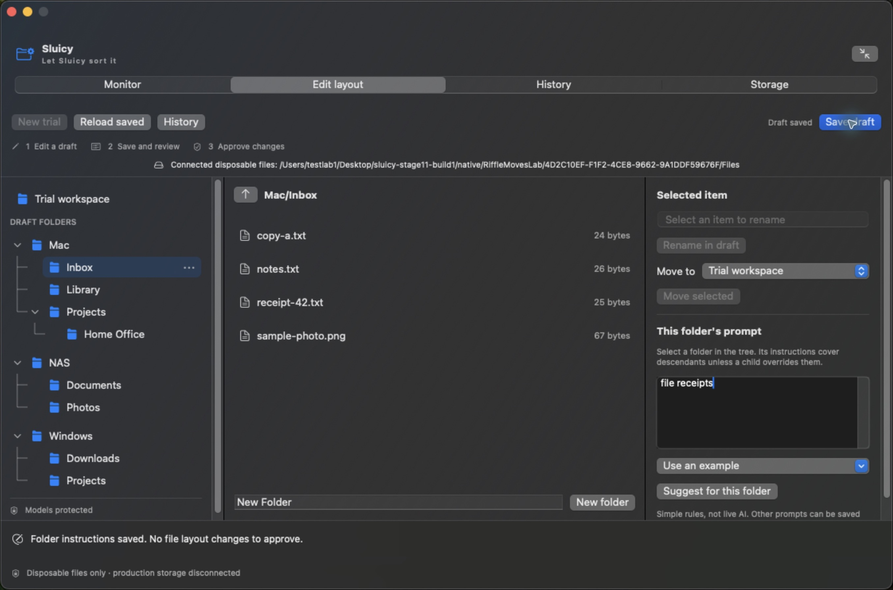
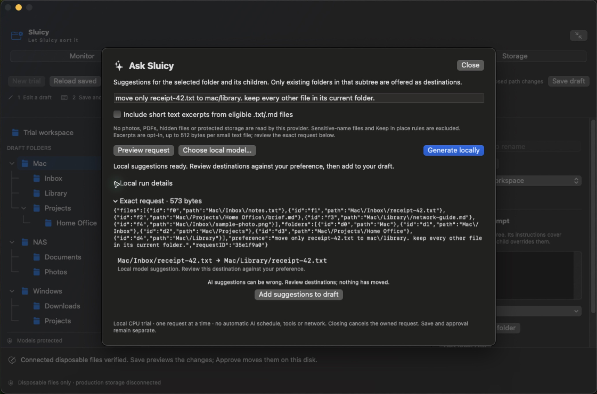

Try a better layout.
Rename, move and arrange files in a draft browser. Folder instructions help turn your preferences into proposals.
A calmer home for your files. Explore a new layout, tell each folder what belongs there, and approve the changes before anything moves.
Take a lookFROM THE WORKING PROTOTYPE
Real screenshots from our isolated test environment. Select a view to explore what is working today.

“Mac”, “NAS” and “Windows” in the screenshots are sample folder names inside one disposable local tree. Network and Windows file operations are not enabled in this prototype.
NEW · STAGE 12
A small model runs locally and suggests a destination. You decide whether its proposal belongs in the draft.

The four regression requests took 18.8–26.5 seconds each in the test VM. Broader quality, personal files, network storage, OCR and automatic organization remain unqualified.
Rename, move and arrange files in a draft browser. Folder instructions help turn your preferences into proposals.
Save, review and approve are separate steps. The prototype rechecks the test files before applying the approved layout.
Approved layout changes have recovery records and a separate restore flow. Observation history is metadata, not a backup of file contents.
BUILD NOTES · OCTOBER 27, 2026
Working toward an assistant that understands where things belong — with careful review at every step.
Connected disposable storage, folder prompts, draft editing, exact change review and verified moves.
Restore and interrupted-operation recovery checked across guest restarts in earlier safety stages.
Bounded sweeps, reused checks for unchanged small files, duplicate-content findings and the latest 12 changed observations. The monitor itself does not move or delete files.
Four bounded CPU-only model cases and one app request passed. The app added the suggestion to a draft, canceled an approval without changes, then applied and restored the exact move. This is a small synthetic trial, not general organization reliability.
Network locations, richer document and photo understanding, and carefully scoped automation. These remain future work.
A WORK IN PROGRESS, WORTH SHARING
This is a development showcase, not a production release or a live file browser. The app’s source is private. This page contains only selected demo images and progress notes.
Explore the screenshots ↑